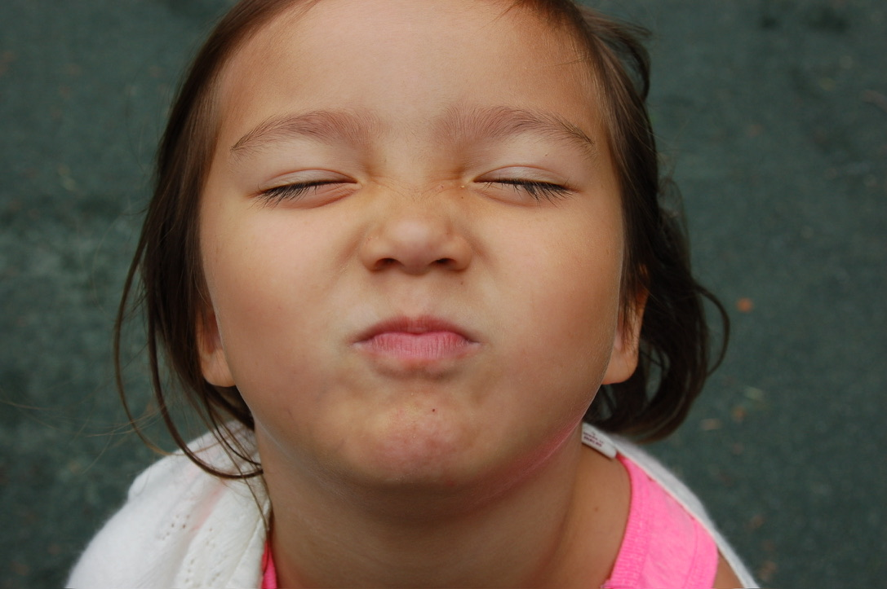
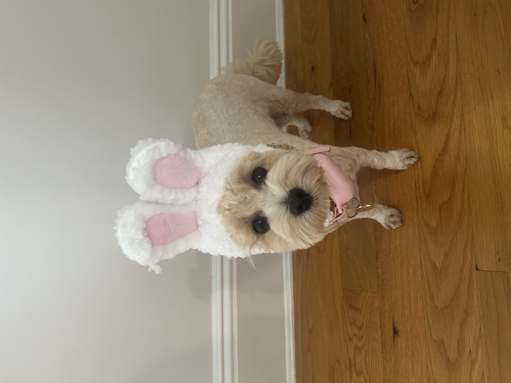
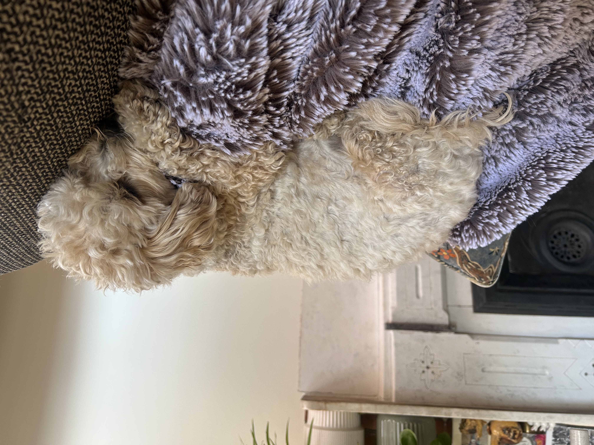
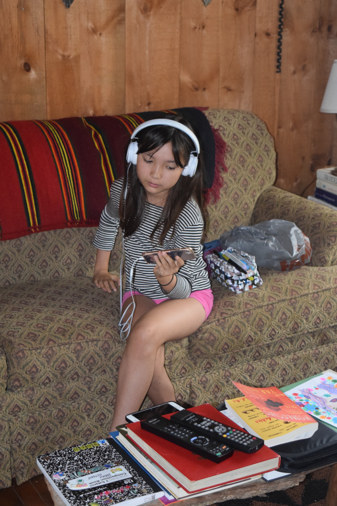
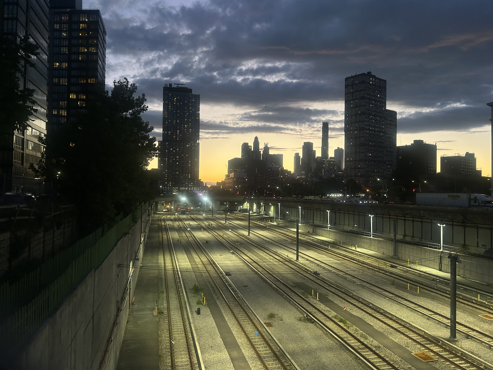
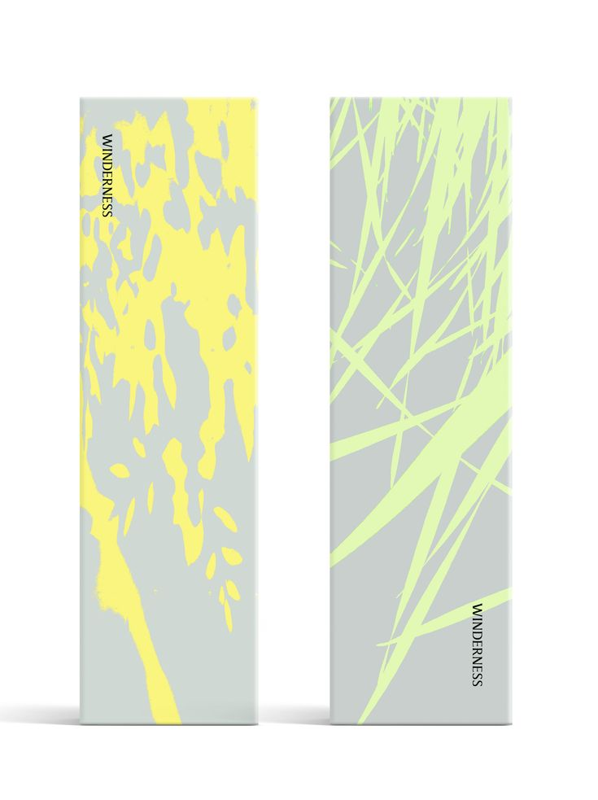

I've lived in NYC my whole life but i love traveling and would definitely want to live in another country or across the country for some time. Some facts about myself are i am definitely a dog person, and especially love dogs with dyed hair (fur sensitive dye) because i think they are just so funky. I really like neon colors and I'm still trying to figure out why exactly....like some florescent traffic cone orange yummmmmmm anyways
my dog is named tokki and she is a maltipoo! She is turning 2 this year which means shes in a bit of a teenage angsty phase right now. She is named"tokki" which means "rabbit" in Korean because of how much she loves to hop around. We were debating naming her Carmy (from the bear), Yumi (idk), but now my mom wishes her name was Francis. My favorite things about her is how she likes to climb up really high to the highest part of our couch and stay there for a while, and also when she runs up to me to say hi in the morning. Another cute thing she does is she sleeps with my mom and when my mom gets up in the morning, she stays laying around in bed until she decides its time for her to get up. She knows what she wants!


I listen to alottttt of music... sometimes it overwhelms me. I really listen to anything and everything and I'm not just saying thaaaaat..... i think my music taste has defenitely been shaped by my sister and her playing music in the car when i was younger. I used to collect CDs alot too but haven't been recently but maybe I will continue building my collection this summer.. I most recently saw Moin back in May and it was so crazy good it was a totally different experience hearing them live but check them out! My spotify is: weengu

I really love cooking for myself and others...i've always sort of prepared my own food but this year i've really started cooking way more and expanding my skills within cooking. I have so many recipes saved that i want to try and I just love food, especially veggies and fruit :p
one of my favorite things to do is walk, especially at dusk/night. I love to explore new areas that i haven't yet and find my way back home or just walk around my go-to places. Walking at night around Brooklyn is really fun for me although it obviously depends how late it is and where you are, but I find it super calming and relaxing.Usually there are a few people in the park when the sun has just gone down and it feels like a totally different space than during the day. During the day i really love to explore LES and Chinatown because there is just so much to see and interact with

I LOVE PACKAGING! I love interesting and eye catching packaging but also clever and well designed packaging.... i always wanted to be a packaging designer because how a product is packaged is so important... sometimes i almost buy things just for the packaging design ngl


.jpeg)
i watch soooooo many shows and movies too but way more shows and truly love a wide range of media. From survivor to soul eater I just love watching shows. Here are some favs and some recs:
The Sopranos
Atlanta
Girls Hbo
VEEP
community
insecure
lunatics
portlandia
crashing
the jinx
flight of the concords